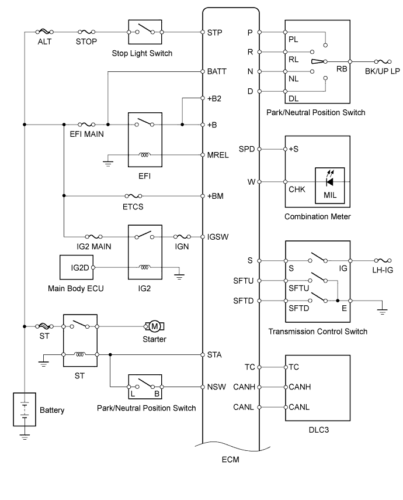
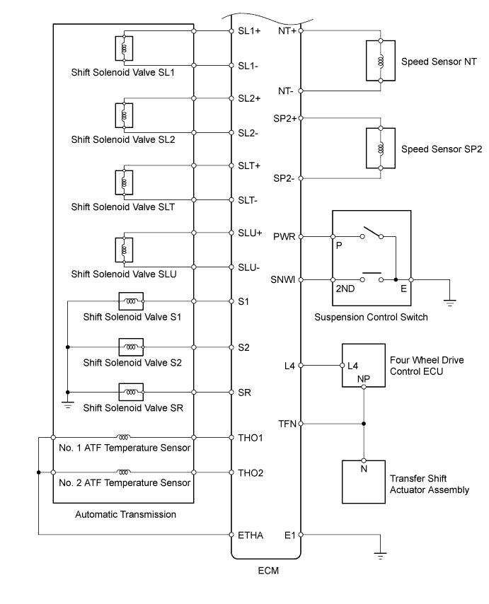

AUTOMATIC TRANSMISSION SYSTEM (for 2UZ-FE) > SYSTEM DIAGRAM
for Preparation
Click here
The configuration of the electronic control system in the A750F automatic transmission is as shown in the following chart.

